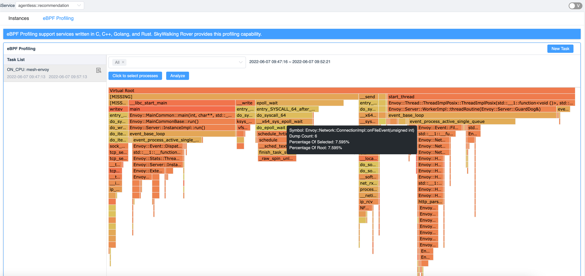
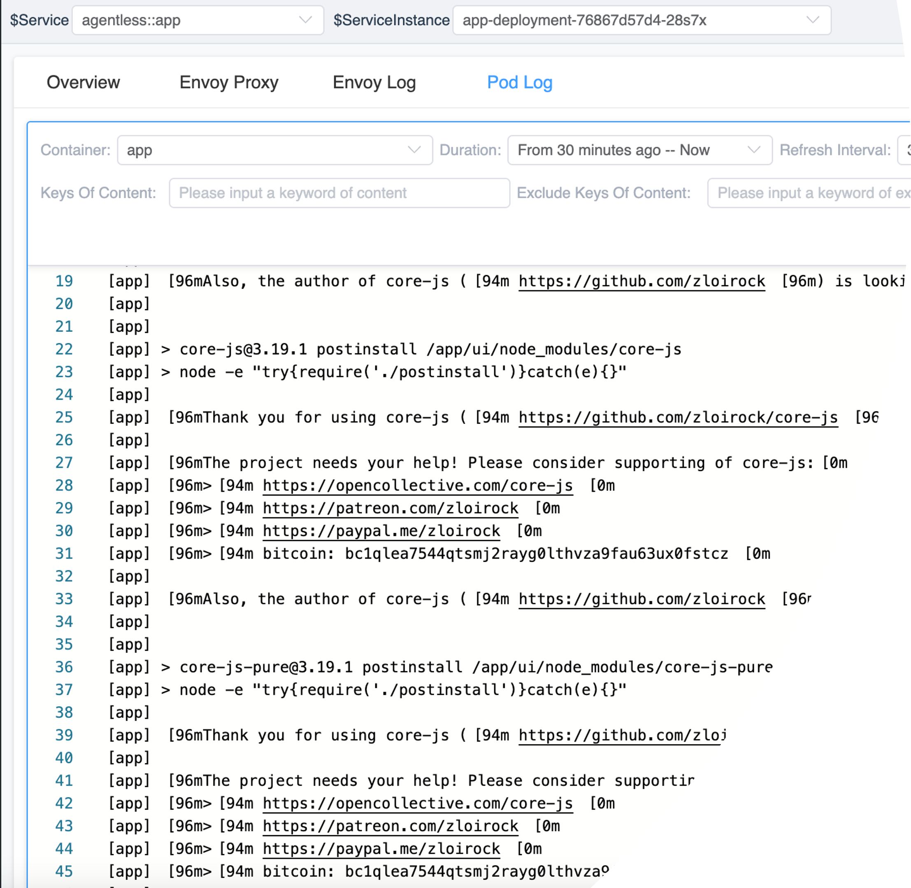
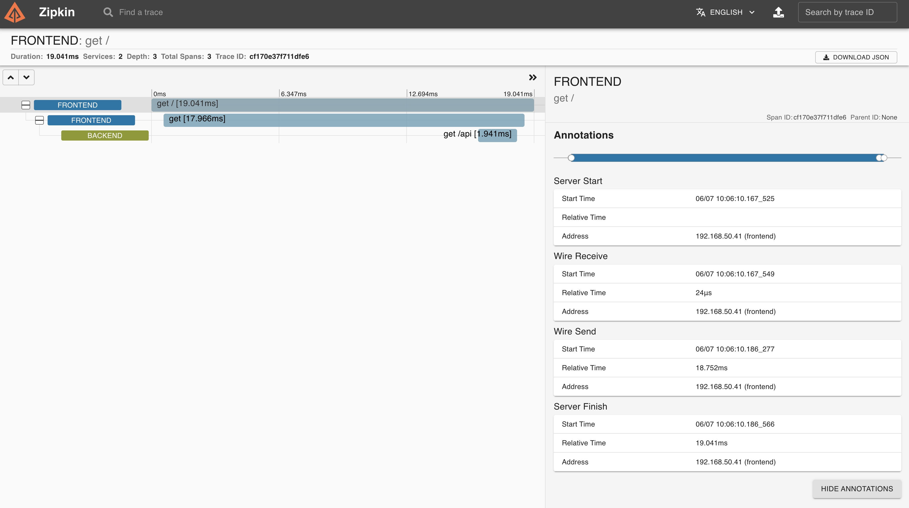

SkyWalking 9.1.0 is released. Go to downloads page to find release tars.
- eBPF agent(skywalking rover) is integrated in the first time

- BanyanDB(skywalking native database) is integrated and passed MVP phase.
- On-demand logs are provided first time in skywalking for all mesh services and k8s deployment as a zero cost log solution

- Zipkin alternative is being official, and Zipkin’s HTTP APIs are supported as well as lens UI.

Changes by Version
Project
- [IMPORTANT] Remove InfluxDB 1.x and Apache IoTDB 0.X as storage options, check details at here. Remove converter-moshi 2.5.0, influx-java 2.15, iotdb java 0.12.5, thrift 0.14.1, moshi 1.5.0, msgpack 0.8.16 dependencies. Remove InfluxDB and IoTDB relative codes and E2E tests.
- Upgrade OAP dependencies zipkin to 2.23.16, H2 to 2.1.212, Apache Freemarker to 2.3.31, gRPC-java 1.46.0, netty to 4.1.76.
- Upgrade Webapp dependencies, spring-cloud-dependencies to 2021.0.2, logback-classic to 1.2.11
- [IMPORTANT] Add BanyanDB storage implementation. Notice BanyanDB is currently under active development and SHOULD NOT be used in production cluster.
OAP Server
- Add component definition(ID=127) for
Apache ShenYu (incubating). - Fix Zipkin receiver: Decode spans error, missing
Layerfor V9 and wrong time bucket for generate Service and Endpoint. - [Refactor] Move SQLDatabase(H2/MySQL/PostgreSQL), ElasticSearch and BanyanDB specific configurations out of column.
- Support BanyanDB global index for entities. Log and Segment record entities declare this new feature.
- Remove unnecessary analyzer settings in columns of templates. Many were added due to analyzer’s default value.
- Simplify the Kafka Fetch configuration in cluster mode.
- [Breaking Change] Update the eBPF Profiling task to the service level, please delete
index/table:
ebpf_profiling_task,process_traffic. - Fix event can’t split service ID into 2 parts.
- Fix OAP Self-Observability metric
GC Timecalculation. - Set
SW_QUERY_MAX_QUERY_COMPLEXITYdefault value to1000 - Webapp module (for UI) enabled compression.
- [Breaking Change] Add layer field to event, report an event without layer is not allowed.
- Fix ES flush thread stops when flush schedule task throws exception, such as ElasticSearch flush failed.
- Fix ES BulkProcessor in BatchProcessEsDAO was initialized multiple times and created multiple ES flush schedule tasks.
- HTTPServer support the handler register with allowed HTTP methods.
- [Critical] Revert Enhance DataCarrier#MultipleChannelsConsumer to add priority to avoid consuming issues.
- Fix the problem that some configurations (such as group.id) did not take effect due to the override order when using the kafkaConsumerConfig property to extend the configuration in Kafka Fetcher.
- Remove build time from the OAP version.
- Add data-generator module to run OAP in testing mode, generating mock data for testing.
- Support receive Kubernetes processes from gRPC protocol.
- Fix the problem that es index(TimeSeriesTable, eg. endpoint_traffic, alarm_record) didn’t create even after rerun with init-mode. This problem caused the OAP server to fail to start when the OAP server was down for more than a day.
- Support autocomplete tags in traces query.
- [Breaking Change] Replace all configurations
**_JETTY_**to**_REST_**. - Add the support eBPF profiling field into the process entity.
- E2E: fix log test miss verify LAL and metrics.
- Enhance Converter mechanism in kernel level to make BanyanDB native feature more effective.
- Add TermsAggregation properties collect_mode and execution_hint.
- Add “execution_hint”: “map”, “collect_mode”: “breadth_first” for aggregation and topology query to improve 5-10x performance.
- Clean up scroll contexts after used.
- Support autocomplete tags in logs query.
- Enhance Deprecated MetricQuery(v1) getValues querying to asynchronous concurrency query
- Fix the pod match error when the service has multiple selector in kubernetes environment.
- VM monitoring adapts the 0.50.0 of the
opentelemetry-collector. - Add Envoy internal cost metrics.
- Remove
Layerconcept fromServiceInstance. - Remove unnecessary
onCompletedon gRPConErrorcallback. - Remove
Layerconcept formProcess. - Update to list all eBPF profiling schedulers without duration.
- Storage(ElasticSearch): add search options to tolerate inexisting indices.
- Fix the problem that
MQhas the wrongLayertype. - Fix NoneStream model has wrong downsampling(was Second, should be Minute).
- SQL Database: provide
@SQLDatabase.AdditionalEntityto support create additional tables from a model. - [Breaking Change] SQL Database: remove SQL Database config
maxSizeOfArrayColumnandnumOfSearchableValuesPerTag. - [Breaking Change] SQL Database: move
Tags listfromSegment,Logs,Alarmsto their additional table. - [Breaking Change] Remove
totalfield in Trace, Log, Event, Browser log, and alarm list query. - Support
OFF_CPUeBPF Profiling. - Fix SumAggregationBuilder#build should use the SumAggregation rather than MaxAggregation.
- Add TiDB, OpenSearch, Postgres storage optional to Trace and eBPF Profiling E2E testing.
- Add OFF CPU eBPF Profiling E2E Testing.
- Fix searchableTag as
rpc.status_codeandhttp.status_code.status_codehad been removed. - Fix scroll query failure exception.
- Add
profileDataQueryBatchSizeconfig in Elasticsearch Storage. - Add APIs to query Pod log on demand.
- Remove OAL for events.
- Simplify the format index name logical in ES storage.
- Add instance properties extractor in MAL.
- Support Zipkin traces collect and zipkin traces query API.
- [Breaking Change] Zipkin receiver mechanism changes and traces do not stream into OAP Segment anymore.
UI
- General service instance: move
Thread Poolfrom JVM to Overview, fixJVM GC Countcalculation. - Add Apache ShenYu (incubating) component LOGO.
- Show more metrics on service/instance/endpoint list on the dashboards.
- Support average values of metrics on the service/list/endpoint table widgets, with pop-up linear graph.
- Fix viewLogs button query no data.
- Fix UTC when page loads.
- Implement the eBPF profile widget on dashboard.
- Optimize the trace widget.
- Avoid invalid query for topology metrics.
- Add the alarm and log tag tips.
- Fix spans details and task logs.
- Verify query params to avoid invalid queries.
- Mobile terminal adaptation.
- Fix: set dropdown for the Tab widget, init instance/endpoint relation selectors, update sankey graph.
- Add eBPF Profiling widget into General service, Service Mesh and Kubernetes tabs.
- Fix jump to endpoint-relation dashboard template.
- Fix set graph options.
- Remove the
Layerfiled from the Instance and Process. - Fix date time picker display when set hour to
0. - Implement tags auto-complete for Trace and Log.
- Support multiple trees for the flame graph.
- Fix the page doesn’t need to be re-rendered when the url changes.
- Remove unexpected data for exporting dashboards.
- Fix duration time.
- Remove the total field from query conditions.
- Fix minDuration and maxDuration for the trace filter.
- Add Log configuration for the browser templates.
- Fix query conditions for the browser logs.
- Add Spanish Translation.
- Visualize the OFF CPU eBPF profiling.
- Add Spanish language to UI.
- Sort spans with startTime or spanId in a segment.
- Visualize a on-demand log widget.
- Fix activate the correct tab index after renaming a Tabs name.
- FaaS dashboard support on-demand log (OpenFunction/functions-framework-go version > 0.3.0).
Documentation
- Add eBPF agent into probe introduction.
All issues and pull requests are here